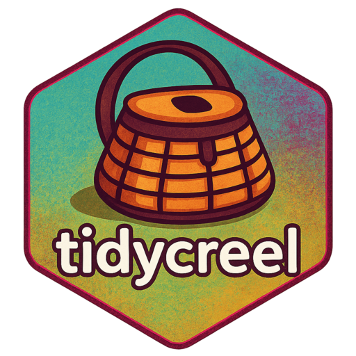

Example angler interview data for aerial creel survey
Source:R/data.R
example_aerial_interviews.RdAngler interview data for an aerial creel survey at a Nebraska reservoir.
Contains 48 interviews across 16 sampling days in June-July 2024, with
3 interviews per sampling day. Anglers target walleye and bass. All
interviews are complete trips. Dates match example_aerial_counts.
Format
A data frame with 48 rows and 8 variables:
- date
Interview date (Date class), June-July 2024.
- day_type
Day type stratum:
"weekday"or"weekend".- trip_status
Trip completion status:
"complete"for all 48 interviews.- hours_fished
Numeric trip duration in hours (range 1.0-5.0). This column feeds the mean trip duration (\(\bar{L}\)) used in
estimate_catch_rate.- walleye_catch
Integer total walleye caught (kept + released).
- walleye_kept
Integer walleye harvested; always
<= walleye_catch.- bass_catch
Integer total bass caught (kept + released).
- bass_kept
Integer bass harvested; always
<= bass_catch.
See also
example_aerial_counts for matching count data,
creel_design(), add_interviews(), estimate_catch_rate(),
estimate_total_catch()
Examples
data(example_aerial_counts)
data(example_aerial_interviews)
# Build an aerial design and add interview data
aerial_cal <- data.frame(
date = example_aerial_counts$date,
day_type = example_aerial_counts$day_type,
stringsAsFactors = FALSE
)
design <- creel_design(
aerial_cal,
date = date,
strata = day_type,
survey_type = "aerial",
h_open = 14
)
design <- add_counts(design, example_aerial_counts)
#> Warning: No weights or probabilities supplied, assuming equal probability
design <- suppressWarnings(add_interviews(
design,
example_aerial_interviews,
catch = walleye_catch,
effort = hours_fished,
trip_status = trip_status
))
#> ℹ No `n_anglers` provided — assuming 1 angler per interview.
#> ℹ Pass `n_anglers = <column>` to use actual party sizes for angler-hour
#> normalization.
#> ℹ Added 48 interviews: 48 complete (100%), 0 incomplete (0%)
suppressWarnings(estimate_catch_rate(design))
#> ℹ Using complete trips for CPUE estimation
#> (n=48, 100% of 48 interviews) [default]
#>
#> ── Creel Survey Estimates ──────────────────────────────────────────────────────
#> Method: Ratio-of-Means CPUE
#> Variance: Taylor linearization
#> Confidence level: 95%
#>
#> # A tibble: 1 × 5
#> estimate se ci_lower ci_upper n
#> <dbl> <dbl> <dbl> <dbl> <int>
#> 1 0.413 0.0601 0.295 0.531 48